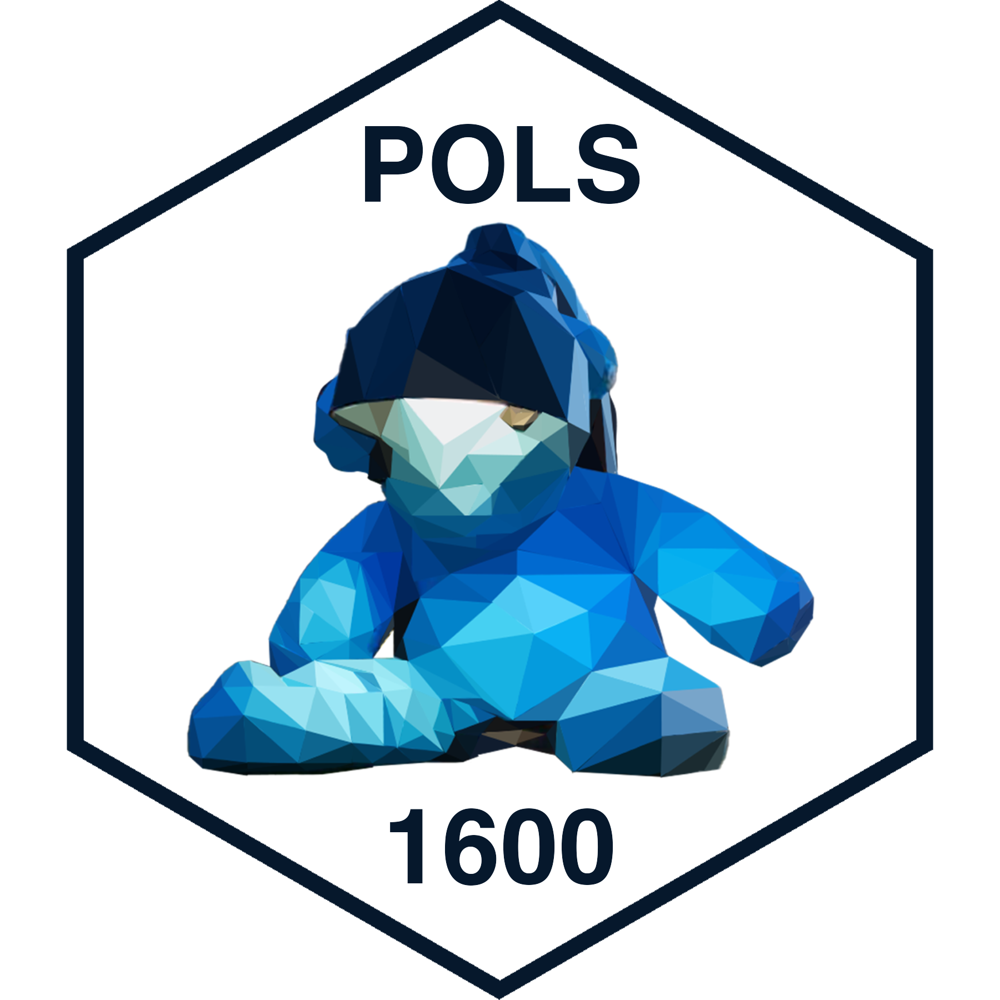

POLS 1600
Causal Inference in
Experimental Designs
Updated Feb 15, 2024
Overview
Class Plan
- Announcements
- Feedback
- Review
- Class plan
- Causal Inference
- Notation for Causal Inference
- Causal Identification
- Causal Identification in Experiments
resumedata from QSS- Explore Broockman and Kalla (2016)
Annoucements
Group Assignments
Feedback
What did we like
What did we dislike
Setup
Every time you work in R
Save your file to your course or project folder
Set your working directory
Load, and if needed, install packages
Maybe change some global options in your .Rmd file
Setting your working directory:
- My default code for setting a working directory is:
This is really just a reminder to someone else using my code that they need to have their working directories set up correctly
R Studio sets the working directory automatically, when you knit the file
When I work on a file, I set the working directory manually
Setting your working directory when working “Live”

Packages for today
## Pacakges for today
the_packages <- c(
## R Markdown
"kableExtra","DT",
## Tidyverse
"tidyverse", "lubridate", "forcats",
"haven", "labelled",
## Extensions for ggplot
"ggmap","ggrepel", "ggridges",
"ggthemes", "ggpubr", "GGally",
"scales", "dagitty", "ggdag", #<<
# Data
"COVID19","maps","mapdata",
"qss" #<<
)
## Define a function to load (and if needed install) packages
#| label = "ipak"
ipak <- function(pkg){
new.pkg <- pkg[!(pkg %in% installed.packages()[, "Package"])]
if (length(new.pkg))
install.packages(new.pkg, dependencies = TRUE)
sapply(pkg, require, character.only = TRUE)
}
## Install (if needed) and load libraries in the_packages
ipak(the_packages)kableExtra DT tidyverse lubridate forcats haven labelled
TRUE TRUE TRUE TRUE TRUE TRUE TRUE
ggmap ggrepel ggridges ggthemes ggpubr GGally scales
TRUE TRUE TRUE TRUE TRUE TRUE TRUE
dagitty ggdag COVID19 maps mapdata qss
TRUE TRUE TRUE TRUE TRUE TRUE Review
Review: Data wrangling
Data transformations
You want to:
Load some data
Combine multiple functions
Look at your data
Recode your data
Transform your data
You could use
read_*functions%>%the “pipe” operatorglimpse()head(),filter(),select(),arrange()mutate(),case_when(),ifelse()summarize(),group_by()
Data Visualization
The grammar of graphics
At minimum you need:
dataaestheticmappingsgeometries
Hey Jude, make a sad plot and make it better by:
labelsthemesstatisticscooridnatesfacets- transforming your data before plotting
Causal Inference
Causal claims imply counterfactual comparisons
Causal claims imply claims about counterfactuals
What would have happened if we were to change some aspect of the world?

What’s the counter factual for these claims:
Foreign aid increases develop
Wikileaks cost Hillary Clinton the 2016 election
Democracies don’t fight wars with other democracies
Universal Pre-K improves child development
Casual claims are are all around us


Casual claims are are all around us
What are some questions that interest you?
What are the counterfactual comparisons they imply?
Notation for Causal Inference
How to represent causal claims
In this course, we will use two forms of notation to describe our causal claims.
Directed Acyclic Graphs (DAGs, next lecture)
Potential Outcomes Notation
General Notation: Variables
Your outcome of interestDan indicator of treatment statusD=1\(\to\) treatedD=0\(\to\) not treated (control)
Zan of assignment statusZ=1\(\to\) assigned to treatmentZ=0\(\to\) assigned to control
Xa covariate or predictor we can measure/observeUunmeasured covariates
Expected Values
The \(E[Y]\) reads as “the expected value of Y”
\(E[Y]\) is defined as a probability weighted average based on the unconditional probability of Y ( \(f(y)\) )
\[\operatorname{E}[Y] = \int_{-\infty}^\infty y f(y)\, dy\]
Conditional Expectations
The \(E[Y|X=x]\) reads as “the expected value of Y conditional on the value of X”
\(E[Y|X=x]\) is defined as a probability weighted average of Y based on the conditional probability of Y given X ( \(y f_{Y|X}(y|x)\) )
\[\operatorname{E}[Y \vert X=x] = \int_{-\infty}^\infty y f (y\vert x) \, dy\]
Estimands, Estimators and Estimates
Estimand the thing we want to know.
- Sometimes called a parameter (\(\theta\), “theta”) or quantity of interest
- The expected value of heights in POLS 1600 (\(\theta =E[X]\))
Estimator a rule or method for calculating an estimate of our estimand
- An average of a sample of 10 student’s heights in POLS 1600
- \(\hat{\theta} = \bar{x} = 1/n*\sum_1^{n} x_i\)
Estimate: a value produced by our estimator for some data
- The average of our 10 person sample is
5'10''
- The average of our 10 person sample is
Error and Bias
We’ll talk about lots of types of bias throughout this course.
Formally, we’ll say an estimate, \(\hat{\theta}\) (“theta hat”) is an unbiased estimator of a parameter, \(\theta\) (“theta”) if:
\[ E[\hat{\theta}] = \theta \]
Bias or error, \(\epsilon\), is the difference between our estimate and the truth
\[ \epsilon = \hat{\theta} -\theta \]
An estimator is unbiased if, on average, the errors equal 0
\[ E[\epsilon] = E[\hat{\theta} -\theta] = 0 \]
Bias vs. variance

The bias-variance tradeoff

Potential outcomes notation
- \(Y_i(1)\) describes individual \(i\)’s outcome, \(Y_i\) if they received the treatment \((D_i = 1)\)
- Shorthand for \(Y_i(D_i=1)\)
- Paul’s Covid-19 status (\(Y_i\)) with the vaccine (\(D_i = 1\))
- \(Y_i(0)\) describes individual \(i\)’s outcome, \(Y_i\) if they did not receive the treatment \((D_i = 0)_i\)
- Shorthand for \(Y_i(D_i=0)\)
- Paul’s Covid-19 status (\(Y_i\)) without the vaccine (\(D_i=0\))
The treatment received determines which potential outcome we actually observe:
\[ Y_i = (1 - D_i)*Y_i(0) + D_i*Y_i(1) \]
Potential outcomes are fixed, but we only observe one (of many) potential outcomes \(\to\) Fundamental Problem of Causal Inference
Fundamental Problem of Causal Inference
The individual causal effect (ICE), \(\tau_i\), is defined as
\[ \tau_i \equiv Y_i(1) - Y_i(0) \]
The fundamental problem of causal inference is that we only ever see one potential outcome for an individual, and so it’s impossible to know the causal effect of some intervention for that individual
The ICE is unidentified
Causal Identification
Identification
Identification refers to what we can learn from the data available
A quantity of interest is identified if, with infinite data it can only take one value
Mathematically, we’ll sometimes say a coefficient in an equation is unidentified if
We have more predictors than observations, or
Some of predictors are linear combinations of other predictors.
Causal Identification
Casual Identification refers to “the assumptions needed for statistical estimates to be given a causal interpretation” Keele (2015)
What’s Your Casual Identification Strategy What are the assumptions that make your research design credible?
Identification > Estimation
Observational vs Experimental Designs
Experimental designs are studies in which a causal variable of interest, the treatement, is manipulated by the researcher to examine its causal effects on some outcome of interest
Observational designs are studies in which a causal variable of interest is determined by someone/thing other than the researcher (nature, governments, people, etc.)
Causal Identification in Experimental Designs
The FPoCI is a problem of missing data
Recall that an individual causal effect \(\tau_i\), is defined as:
\[ \tau_i \equiv Y_i(1) - Y_i(0) \]
The problem is that for any one individual, we only observe \(Y_i(1)\) or \(Y_i(0)\), but never both.
- If Paul got the vaccine \((Y_{Paul}(Vaxxed)=\text{Covid Free})\), then we don’t know what Paul’s health status would have been, had he not got the vaccine \((Y_{Paul}(Unvaxxed) =???)\)
A statistical solution to the FPoCI
Rather than focus individual causal effects:
\[ \tau_i \equiv Y_i(1) - Y_i(0) \]
We focus on average causal effects (Average Treatment Effects [ATEs]):
\[ E[\tau_i] = \overbrace{E[Y_i(1) - Y_i(0)]}^{\text{Average of a difference}} = \overbrace{E[Y_i(1)] - E[Y_i(0)]}^{\text{Difference of Averages}} \]
When does the difference of averages provide us with a good estimate of the average difference?
Let’s consider a simple example
Does eating chocolate make you happy?
\(Y_i\) happiness measured on a 0-10 scale
\(D_i\) whether a person ate chocolate \((D=1)\) or fruit \((D = 0)\)
\(Y_i(1)\) a person’s happiness eating chocolate
\(Y_i(0)\) a person’s happiness eating fruit
\(X_i\) a person’s self-reported preference \((X_i \in\) {chocolate, fruit })
Potential Outcomes:
| \(Y_i(1)\) | \(Y_i(0)\) | \(\tau_i\) |
|---|---|---|
| 7 | 3 | 4 |
| 8 | 6 | 2 |
| 5 | 4 | 1 |
| 4 | 3 | 1 |
| 6 | 10 | -4 |
| 8 | 9 | -1 |
| 5 | 4 | 1 |
| 7 | 8 | -1 |
| 4 | 3 | 1 |
| 6 | 0 | 6 |
| \(E[Y_i(1)]\) | \(E[Y_i(0)]\) | \(E[\tau_i]\) |
|---|---|---|
| 6 | 5 | 1 |
If we could observe everyone’s potential outcomes, we could calculate the ICE
On average eating chocolate increases happiness by 1 point on our 10-point scale (ATE = 1)
Suppose we conducted a study and let folks select what they wanted to eat.
Potential Outcomes:
| \(Y_i(1)\) | \(Y_i(0)\) | \(\tau_i\) |
|---|---|---|
| 7 | 3 | 4 |
| 8 | 6 | 2 |
| 5 | 4 | 1 |
| 4 | 3 | 1 |
| 6 | 10 | -4 |
| 8 | 9 | -1 |
| 5 | 4 | 1 |
| 7 | 8 | -1 |
| 4 | 3 | 1 |
| 6 | 0 | 6 |
| \(E[Y_i(1)]\) | \(E[Y_i(0)]\) | \(ATE\) |
|---|---|---|
| 6 | 5 | 1 |
Observed Treatment:
| \(x_i\) | \(d_i\) | \(y_i\) |
|---|---|---|
| chocolate | 1 | 7 |
| chocolate | 1 | 8 |
| chocolate | 1 | 5 |
| chocolate | 1 | 4 |
| fruit | 0 | 10 |
| fruit | 0 | 9 |
| chocolate | 1 | 5 |
| fruit | 0 | 8 |
| chocolate | 1 | 4 |
| chocolate | 1 | 6 |
| \(\bar{y}_{d=1}\) | \(\bar{y}_{d=0}\) | \(\hat{ATE}\) |
|---|---|---|
| 5.57 | 9 | -3.43 |
Observed Treatment:
| \(x_i\) | \(d_i\) | \(y_i\) |
|---|---|---|
| chocolate | 1 | 7 |
| chocolate | 1 | 8 |
| chocolate | 1 | 5 |
| chocolate | 1 | 4 |
| fruit | 0 | 10 |
| fruit | 0 | 9 |
| chocolate | 1 | 5 |
| fruit | 0 | 8 |
| chocolate | 1 | 4 |
| chocolate | 1 | 6 |
| \(\bar{y}_{d=1}\) | \(\bar{y}_{d=0}\) | \(\hat{ATE}\) |
|---|---|---|
| 5.57 | 9 | -3.43 |
Selection Bias
Our estimate of the ATE is biased by the fact that folks who prefer fruit seem to be happier than folks who prefer chocolate in this example
In general, selection bias occurs when folks who receive the treatment differ systematically from folks who don’t
What if instead of letting people pick and choose, we randomly assigned half our respondents to chocolate and half to receive fruit
Potential Outcomes:
| \(Y_i(1)\) | \(Y_i(0)\) | \(\tau_i\) |
|---|---|---|
| 7 | 3 | 4 |
| 8 | 6 | 2 |
| 5 | 4 | 1 |
| 4 | 3 | 1 |
| 6 | 10 | -4 |
| 8 | 9 | -1 |
| 5 | 4 | 1 |
| 7 | 8 | -1 |
| 4 | 3 | 1 |
| 6 | 0 | 6 |
| \(E[Y_i(1)]\) | \(E[Y_i(0)]\) | \(ATE\) |
|---|---|---|
| 6 | 5 | 1 |
Randomly Assigned Treatment:
| \(x_i\) | \(d_i\) | \(y_i\) |
|---|---|---|
| chocolate | 1 | 7 |
| chocolate | 1 | 8 |
| chocolate | 0 | 4 |
| chocolate | 1 | 4 |
| fruit | 0 | 10 |
| fruit | 1 | 8 |
| chocolate | 0 | 4 |
| fruit | 0 | 8 |
| chocolate | 1 | 4 |
| chocolate | 0 | 0 |
| \(\bar{y}_{d=1}\) | \(\bar{y}_{d=0}\) | \(\hat{ATE}\) |
|---|---|---|
| 6.2 | 5.2 | 1 |
Randomly Assigned Treatment:
| \(x_i\) | \(d_i\) | \(y_i\) |
|---|---|---|
| chocolate | 1 | 7 |
| chocolate | 1 | 8 |
| chocolate | 0 | 4 |
| chocolate | 1 | 4 |
| fruit | 0 | 10 |
| fruit | 1 | 8 |
| chocolate | 0 | 4 |
| fruit | 0 | 8 |
| chocolate | 1 | 4 |
| chocolate | 0 | 0 |
| \(\bar{y}_{d=1}\) | \(\bar{y}_{d=0}\) | \(\hat{ATE}\) |
|---|---|---|
| 6.2 | 5.2 | 1 |
Random Assignment
When treatment has been randomly assigned, a difference in sample means provides an unbiased estimate of the ATE
The fact that our \(\hat{ATE} = ATE\) in this example is pure coincidence.
If we randomly assigned treatment a different way, we’d get a different estimate.
In general unbiased estimators will tend to be neither too high nor too low (e.g. \(E[\hat{\theta} - \theta] = 0\)])
Random Assignment 1
| \(x_i\) | \(d_i\) | \(y_i\) |
|---|---|---|
| chocolate | 1 | 7 |
| chocolate | 1 | 8 |
| chocolate | 0 | 4 |
| chocolate | 1 | 4 |
| fruit | 0 | 10 |
| fruit | 1 | 8 |
| chocolate | 0 | 4 |
| fruit | 0 | 8 |
| chocolate | 1 | 4 |
| chocolate | 0 | 0 |
| \(\bar{y}_{d=1}\) | \(\bar{y}_{d=0}\) | \(\hat{ATE}\) |
|---|---|---|
| 6.2 | 5.2 | 1 |
Random Assignment 2
| \(x_i\) | \(d_i\) | \(y_i\) |
|---|---|---|
| chocolate | 0 | 3 |
| chocolate | 1 | 8 |
| chocolate | 0 | 4 |
| chocolate | 1 | 4 |
| fruit | 1 | 6 |
| fruit | 1 | 8 |
| chocolate | 0 | 4 |
| fruit | 1 | 7 |
| chocolate | 0 | 3 |
| chocolate | 0 | 0 |
| \(\bar{y}_{d=1}\) | \(\bar{y}_{d=0}\) | \(\hat{ATE}\) |
|---|---|---|
| 6.6 | 2.8 | 3.8 |
Random Assignment 3
| \(x_i\) | \(d_i\) | \(y_i\) |
|---|---|---|
| chocolate | 1 | 7 |
| chocolate | 0 | 6 |
| chocolate | 1 | 5 |
| chocolate | 1 | 4 |
| fruit | 0 | 10 |
| fruit | 0 | 9 |
| chocolate | 0 | 4 |
| fruit | 1 | 7 |
| chocolate | 1 | 4 |
| chocolate | 0 | 0 |
| \(\bar{y}_{d=1}\) | \(\bar{y}_{d=0}\) | \(\hat{ATE}\) |
|---|---|---|
| 5.4 | 5.8 | -0.4 |
Distribution of Sample ATEs
Why Random Assignment Matters?
Formally, randomly assigning treatments creates statistical independence \((\unicode{x2AEB})\) between treatment ( \(D\) ) and potential outcomes ( \(Y(1),Y(0)\) ) as well as any observed ( \(X\) ) or unobserved confounders ( \(U\) ):
\[Y_i(1),Y_i(0),\mathbf{X_i},\mathbf{U_i} \unicode{x2AEB} D_i\]
Practically, what this means is that what we can observe ( differences in conditional means for treated and control ), provide good (unbiased) estimates of what we’re trying to learn about (Average Treatment Effects)
Causal Identification with Experimental Designs
Causal identification for experimental designs requires very few assumptions:
Independence (Satisfied by Randomization)
- \(Y(1), Y(0),X,U, \perp D\)
SUTVA Stable Unit Treatment Value Assumption (Depends on features of the design)
- No interference between units \(Y_i(d_1, d_2, \dots, d_N) = Y_i(d_i)\)
- No hidden values of the treatment/Variation in the treatment
Random assignment creates testable implications
If treatment has been randomly assigned, we would expect treatment and control groups to look similar in terms of pre-treatment covariates
- We can show covariate balance by comparing the means in each treatment group
If the treatment had an effect, than we can credibly claim that that effect was due to the presence or absence of the treatment, and not some alternative explanation.
This type of clean apples-to-apples counterfactual comparison is what people mean when they talk about an experimental ideal
No Causation without Manipulation?
- “No causation without manipulation” - Holland (1986)
- Causal effects are well defined when we can imagine manipulating (changing) the value of \(D_i\) and only \(D_i\)
- But what about the “effects” of things like:
- Race
- Sex
- Democracy
- Studying the effects of these factors requires strong theory and clever design Sen and Wasow (2016)
Estimating ATEs with the resume data
The Resume Experimento
Let’s take a look at the resume experiment from your text book and compare some of Imai’s code to its tidyverse equivalent
High level Overview (p. 34)
High level Overview (p. 34)
Crosstabs
Tidy crosstab
Calculating Call Back Rates
Calculating Call Back Rates with group_by()
Factor variables in Base R
resume$type <- NA
resume$type[resume$race == "black" & resume$sex == "female"] <- "BlackFemale"
resume$type[resume$race == "black" & resume$sex == "male"] <- "BlackMale"
resume$type[resume$race == "white" & resume$sex == "female"] <- "WhiteFemale"
resume$type[resume$race == "white" & resume$sex == "male"] <- "WhiteMale"Factor variables in Tidy R
Comparing approaches
Visualizing Call Back Rates by Name
Broockman and Kalla (2016)
Reading Academic Papers
- Reading academic papers is a skill and takes practice.
- You should aim to answer the following:
- What’s the research question?
- What’s the theoretical framework?
- What’s the empirical design?
- What’s are the main results?
Study Design :A placebo-controlled field experiment
- Recruited from voter files to complete a baseline survey
- Among those who complete the survey, half are assigned to receive an intervention and half are assigned to receive a placebo
- Only some are actually home or open the door when the canvassers knock.
- These people are then recruited to participate in a series of surveys 3 days, 3 weeks, 6 weeks, and 3 months after the initial intervention.
Data for Thursday
Let’s load the data from the orginal study
Codebook
completed_baselinewhether someone completed the baseline survey (“Survey”) or not (“No Survey”)treatment_assignedwhat intervention someone who completed the baseline survey was assigned two (treatment= “Trans-Equality”, placebo = “Recycling”)answered_doorwhether someone answered the door (“Yes”) or not (“No”) when a canvasser came to their doortreatment_groupthe treatment assignments of those who answered the door (treatment= “Trans-Equality”, placebo = “Recycling”)vf_agethe age of the person in yearsvf_femalethe respondent’s sex (female = 1, male = 0)vf_democratwhether the person was a registered Democract (Democrat=1, 0 otherwise)vf_whitewhether the person was white (White=1, 0 otherwise)vf_vg_12whether the person voted in the 2012 general election (voted = 1, 0 otherwise)
HLO
Rows: 68,378
Columns: 14
$ completed_baseline <chr> "No Survey", "No Survey", "No Survey", "No Survey",…
$ treatment_assigned <chr> NA, NA, NA, NA, NA, NA, NA, NA, NA, NA, NA, NA, NA,…
$ answered_door <chr> NA, NA, NA, NA, NA, NA, NA, NA, NA, NA, NA, NA, NA,…
$ treatment_group <chr> NA, NA, NA, NA, NA, NA, NA, NA, NA, NA, NA, NA, NA,…
$ vf_age <dbl> 23.00000, 38.00000, 48.00000, 49.20192, 49.20192, 4…
$ vf_female <dbl> 0, 1, 0, 1, 0, 1, 1, 1, 1, 1, 1, 1, 1, 0, 0, 1, 1, …
$ vf_democrat <dbl> 1, 0, 0, 0, 0, 0, 0, 1, 0, 0, 1, 0, 1, 1, 0, 0, 1, …
$ vf_white <dbl> 0, 0, 0, 0, 1, 0, 0, 0, 0, 1, 0, 0, 0, 1, 0, 0, 0, …
$ vf_vg_12 <dbl> 0, 0, 1, 0, 0, 1, 0, 1, 1, 0, 1, 0, 1, 1, 0, 0, 1, …
$ therm_trans_t0 <int> NA, NA, NA, NA, NA, NA, NA, NA, NA, NA, NA, NA, NA,…
$ therm_trans_t1 <int> NA, NA, NA, NA, NA, NA, NA, NA, NA, NA, NA, NA, NA,…
$ therm_trans_t2 <int> NA, NA, NA, NA, NA, NA, NA, NA, NA, NA, NA, NA, NA,…
$ therm_trans_t3 <int> NA, NA, NA, NA, NA, NA, NA, NA, NA, NA, NA, NA, NA,…
$ therm_trans_t4 <int> NA, NA, NA, NA, NA, NA, NA, NA, NA, NA, NA, NA, NA,…Study Design
Assessing balance in covariates
Assessing balance in covariates
Assessing balance in covariates
# Rearrange data
pretreatment_balance %>%
# Pivot columns except treatement assigned
pivot_longer(names_to = "covariate", values_to = "value", -treatment_assigned) %>%
# Pivot rows two two columns for treatment and placebo
pivot_wider(names_from = treatment_assigned) %>%
# Calculate covariate balance
mutate(
Difference = `Trans-Equality` - Recycling
)# A tibble: 5 × 4
covariate Recycling `Trans-Equality` Difference
<chr> <dbl> <dbl> <dbl>
1 vf_age 46.3 47.7 1.40
2 vf_female 0.593 0.582 -0.0103
3 vf_democrat 0.463 0.488 0.0246
4 vf_white 0.209 0.217 0.00790
5 vf_vg_12 0.757 0.719 -0.0375 Summary
Summary
Causal Claims involve counterfactual comparisons
The fundamental problem of causal inference is that for an individual only observe one of many potential outcomes
Causal identification refers to the assumptions necessary to generate credible causal estimates
Identification for experimental designs follows from the random assignment of treatment which allows us to produce unbiased estimates of the Average Treatment Effect

POLS 1600
Broockman, David, and Joshua Kalla. 2016. “Durably reducing transphobia: A field experiment on door-to-door canvassing.” Science 352 (6282): 220–24.